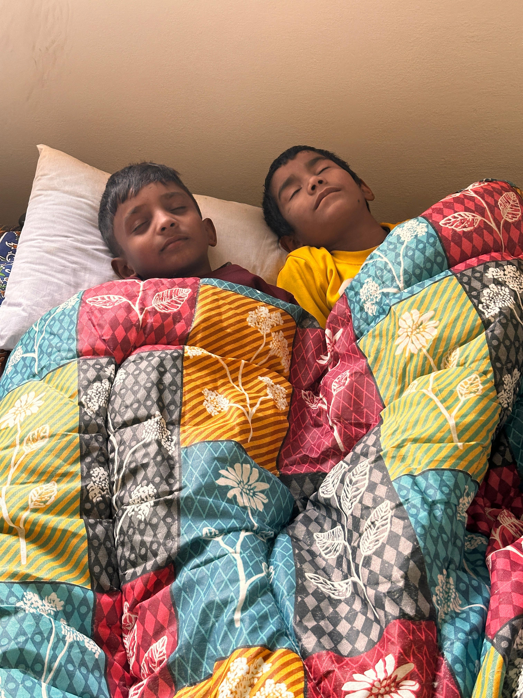

SHARING SMILES
HOPE BEHIND EVERY SMILE
HOPE BEHIND EVERY SMILE
House of Hope
House of Hope provides quality education, nutritious food, safe shelter, and loving care to children in need. Some of the children are orphans, while others come from painful backgrounds including enslaved brick kiln labor.
In a safe and nurturing environment, these children receive care, dignity, education, and the opportunity to grow with hope.
Why House of Hope?
Many vulnerable children in Pakistan face poverty, family instability, neglect, and unsafe living conditions. Without care and support, children can be pushed into labor, lose access to education, and grow up without the protection they need.
House of Hope exists to provide a safe, loving, and structured environment where children can receive care, education, emotional support, and spiritual encouragement.
Every child deserves to feel loved, protected, and valued. Through House of Hope, we are helping children heal, grow, and build a better future.
What We Provide
Providing children with a secure, clean, and loving place to live.
Ensuring children receive proper food and daily care for healthy growth.
Helping children continue learning and build a brighter future.
Giving children encouragement, stability, and a nurturing family atmosphere.
Our Vision
House of Hope is more than a shelter. It is a place where children can recover from hardship, receive education, experience love, and discover that their lives have value and purpose.
We desire to see every child under our care grow in confidence, faith, character, and opportunity.

Matthew 18:5
Your support provides care, stability, education, and hope to children who need it most.